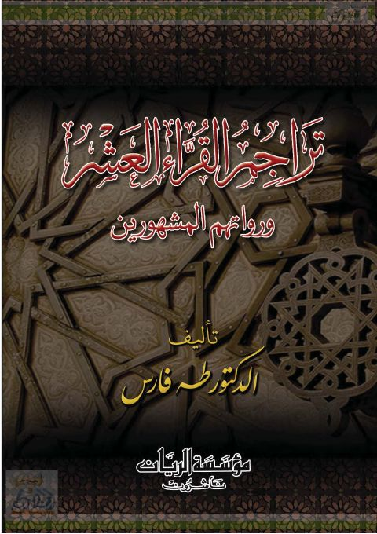

Downloads need an internet connection.
تراجم القراء العشر ورواتهم المشهورين
Authors: طه محمد فارس
Publishers: مؤسسة الريان
**▫️ العنوان: تراجم القراء العشر ورواتهم المشهورين** ▪️ المؤلف: #طه_محمد_فارس ▫️ الناشر: #مؤسسة_الريان_ناشرون ▪️ تاريخ النشر: 2014م 1435هـ ▫️ بلد النشر: بيروت، #لبنان ▪️ الطبعة: 1 ▫️ عدد الأجزاء: 1 ▪️ الصفحات: 205 ▫️ نوع الوعاء: #كتاب ▪️ التصنيف الرئيسي: #التفسير_وعلوم_القرآن ۪